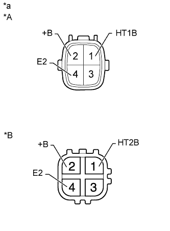

ПОДОГРЕВАЕМЫЙ КИСЛОРОДНЫЙ ДАТЧИК > ПРОВЕРКА |
| 1. ПРОВЕРЬТЕ ПОДОГРЕВАЕМЫЙ КИСЛОРОДНЫЙ ДАТЧИК |
|  |
Измерьте сопротивление в соответствии со значениями, приведенными в таблице ниже.
| Контакты для подключения диагностического прибора | Состояние | Заданные условия |
| 1 (HT1В) - 2 (+B) | 20°C (68°F) | 11 - 16 Ом |
| 1 (HT1B) - 4 (E2) | Всегда | 10 кОм или более |
| Контакты для подключения диагностического прибора | Состояние | Заданные условия |
| 1 (HT2B) - 2 (+B) | 20°C (68°F) | 11 - 16 Ом |
| 1 (HT2B) - 4 (E2) | Всегда | 10 кОм или более |
| *A | для ряда 1 |
| *B | для ряда 2 |
| *a | Устройство с неподсоединенным жгутом проводов (подогреваемый кислородный датчик) |